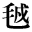

地は饒なり
宮本百合子
一
或る日、ユーラスはいつもの通り楽しそうな足取りで、森から森へ、山から山へと、薄緑色の外袍を軽くなびかせながら、さまよっていました。銀色のサンダルを履き、愛嬌（あいきょう）のある美くしい巻毛に月桂樹の葉飾りをつけた彼が、いかにも長閑（のどか）な様子で現われると、行く先々のニムフ達は、どんなことがあっても見逃すことはありません。おだやかな心持のユーラスは四人の兄弟中の誰よりも、皆に大切にされ、いとおしがられていたのです。
陽気な、疲れることなどをまるで知らないニムフの踊りの輪から、ようようぬけた彼は、涼しさを求めて、ズーッと橄欖（かんらん）の茂り合った丘を下り、野を越えて、一つの谿間（たにま）に入りました。そこはほんとに涼しくて、静かでした。岩や石の間には、夢のような苔や蘭の花が咲き満ちて、糸のように流れて行く水からは、すがすがしい香りが漂い、ゆらゆらと揺れる水草の根元を、針のように光る小魚が、嬉しそうに踊って行きます。
海にある通りの珊瑚（さんご）が、碧（あお）い水底に立派な宮殿を作り、その真中に、真珠のようなたくさんの泡に守られた、小さな小さな人魚が、紫色の髪をさやさやと坐っています。
なんという綺麗（きれい）なのでしょう。ユーラスは、すっかりびっくりしてしまいました。今まで、こんな様子を見たことのなかった彼は、まるで幻を見るような心持で、フラフラと水上の方へと歩いて行きました。
行けば行くほど広くなる谿は、いつの間にか、白楊や樫や、糸杉などがまるで、満潮時（みちしおどき）の大海のように繁って、その高浪の飛沫（しぶき）のように真白な巴旦杏（あめんどう）の花が咲きこぼれている盆地になりました。
そして、それ等の樹々の奥に、ジュピタアでもきっと御存じないに違いないほど、美くしい者を見つけたとき、ユーラスは、もう息もつけないような心持になりました。
天鵝絨（ビロード）のように生えた青草の上に、蛋白石（オパール）の台を置いて、腰をかけた、一人の乙女を囲んで、薔薇や鬱金香（チューリップ）の花が楽しそうにもたれ合い、小ざかしげな鹿や、鳩や金糸雀（カナリヤ）が、静かに待っています。
そして、台の左右には、まるで掌（てのひら）に乗れそうな体のお爺さんが二人、真赤な地に金糸で刺繍（ししゅう）をした着物を着、手には睡蓮（すいれん）の花を持って立っています。あたりには、龍涎香を千万箱も開けたような薫香に満ち、瑪瑙（めのう）や猫眼石に敷きつめられた川原には、白銀の葦（あし）が生え茂って、岩に踊った水が、五色のしぶきをあげるとき、それ等の葦は、まあ何という響を立てることでしょう。
胡蝶（こちょう）の翅（はね）を飾る、あの美くしい粉ばかりを綴ったように、日の光りぐあいでどんな色にでも見える衣を被って、渦巻く髪に真赤なてんとう虫を止らせている乙女は、やがてユーラスの見たこともないライアをとりあげました。
そして、七匹の青蜘蛛（ぐも）が張りわたしている絃を掻き鳴らし始めると、二人のお爺さんは、睡蓮の花を静かに左や右に揺り、いっぱいに咲きこぼれている花々の蕋（ずい）からは、一人ずつの類もなく可愛らしい花の精が舞いながら現われて来ました。
目に見えない※毛（わたげ）を金色に輝やかせながら、喉を張って歌う乙女の歌について、森じゅうの木々の葉と草どもが、小波のように繰返しをつけて行く。花は舞う。草木は歌う。勢づいた流れの水は、旋律につれて躍（おど）り上り跳（は）ね上って、絶間ない霧で、天と地との間を七色に包む。
ありとあらゆるものが、魔法のような美くしいうちに、乙女の声は体の顫（ふる）える力と魅力をもって澄み上って行ったのです。
ユーラスは、半分夢中のようになりました。そして、いきなりその踊りの真中を目がけて踏み出そうとすると、今までは、なごやかに低唱していた樫の木精が、一どきに
ギワーツク、ギワーツク、カットンロー、カットンローローワラーラー……と歌い出し、彼方の霧の底から、微かな
ハッハッハッ！ ホッホッホッ！ という声が高まって来ると一緒に、森じゅうの木という木の葉が、波のように白い葉裏を翻しながら、彼に向って泡立って来ました。
ギワーツク、ギワーツク、カットンロー、カットンロー……
ハッハッハッ！ ホッホッホッ！
ユーラスは、自分が神様だったのをすっかり忘れてしまって大いそぎで逃げ出しました。そして、また次の日にいくらその谿間に違いないところをさがしてみても、あの綺麗な小川さえ見つけることができませんでした……。
殆どあらゆる種類の伝説と童話とが酵母となって、彼女の生活のどこの隅々にまでも、渾然（こんぜん）と漲りわたっていた果もない夢幻的空想は、今ようようその気まぐれな精力と、奇怪な光彩とを失い、小さい宝杖を持ち宝冠を戴（いただ）いた王様や女王様、箒に乗って月に飛ぶ鼻まがりの魔法使いなどは、皆足音も立てずにどこかの国へ行ってしまった。
そして、面白いお噺（はなし）のこの上なく上手な話し手としての名誉と、矜恃（きょうじ）とを失った彼女は、渾沌（こんとん）とした頭に、何かの不調和を漠然と感じる十二の子供として、夢と現実の複雑な錯綜のうちに遺されたのである。
一面紫色にかすみわたる黎明の薄光が、いつか見えない端（は）し端（ば）しから明るんで、地は地の色を草は草自身の色をとり戻すように、彼女の周囲のあらゆる事物は、まったく「いつの間にか」彼等自身の色と形とをもって、ありのまま彼女の前に現われるようになって来た。
今までは、遙か遙か高いところに光っているほどに思われた大人の世界は、自分等が見まいとしても見ずにはいられないほど、ついじきそこにある。
ただ、仔猫（こねこ）がじゃれるように遊び合っていた友達の中にも何か先（せん）には気の付かなかったいろいろなことが、珍らしい彼等の姿をチラチラと見え隠れさせる。
仕合わせに可愛がられ、正しさを奨励され、綺麗な物語りの中に育って、躊躇（ちゅうちょ）とか不安とかいうものをまるで知らなかった彼女は、自分の前へ限りもなく拡げられる、種々雑多な色と、形と音との世界に対して、まるで勇ましい探検者のように、飽くことのない興味と熱中とをもって、突き進んで行ったのである。
詳しく説明されるほどの豊富な内容は、もちろん持っていなかったにしろ、そう考えること自身が、もう既に無上の歓喜であり、憧憬である「立派な大人」という予想に鼓舞されながら、彼女は自分の囲りに起って来る、どんな些細な事物にでも注意を向けずには置かなかった。そして、それ等のことは一つ一つ皆丁寧に、彼女の心のうちで、「善いこと、正しいこと」という言葉で総括されている一つの道徳的標準と照らし合わされ、引きくらべられて、各自の価値をつけられる。
その価値は、即ち彼女の思っている「立派な人」の一分子として取り入れらるべきものであるか拒絶されるべきものであるかということなのである。
ところが、だんだんと立つうちに、彼女はまったく驚き、混乱せずにはいられないいろいろなことに出会い始めた。
赤という色は、それが赤であるかぎり、誰に見られても、どこに置かれても変りない赤であると思っていた者にとって、まったく同じその赤が、或るところでは、紫だと云われ黒だと云われ、もっとひどいときには、赤に違いない赤を見、見せながら、
これは、青ですね。
ええ、あなたがおっしゃるんだから青でしょう。青に違いありません。
と云うのを知ったことは、どれほどの意外さであり、また不快であったろう。
すべてのことを信頼し、尊重しようとして期待し、心を打ち開いていた彼女は、まったく思いもかけなかった厭なもの、悪いとほか思えないことを、事々物々の裏に、見出さなければならなかったのである。
そして、なおなお彼女の心を乱したことには、どんなにああ悪いと思うようなことも、皆決して、むき出しの悪いままではやって来ないことであった。
善さそうな声や、愛嬌のある微笑を湛えながら、それ等は優しいしとやかな姿を装うて来る。
彼女は自分の信じている人々――その人達はいつも善く正しいものだと許り思っていた人が――言葉とはまるで反対のことを平気でしているのを見た。
可哀そうがられるべきだと云われつつ、気の毒な人が堪らないような辱（はずか）しめを蒙らなければならないのを知った。
それ等のことに対して、彼女はいかほどの「感じ」を持っただろう。明かに矛盾を認める心、真正なことの裏切られる苦痛、適当な言葉を知らず、整った順序に並べることの出来るほど、複雑な頭脳を持っていなかった彼女は、何も彼にもただ感じるだけなのである。
ああ、そんなことをするものではない、彼女は黙っていられないような、感じに打たれる。そして、顔があつくなり、息の弾（はず）んで来るのを感じる。けれども、彼女はあなたのどこは、どう悪いからお止めなさいということは出来ない。自分の心が唸りを立てるほどに漲って来る感じ、強烈な、盲目的な感じを、静かに分解し、解剖して、感じの起された原因を探ったり、批評したりすることはとうてい出来ないのである。
そういうことに出会うごとに彼女はどうしようにも仕方のない情けなさと、腹立たしさに心を掻き※（むし）られた。ちょうど、小さい子供が天気の落着かない夕方などには、よく理由の分らない焦躁と不安とに迫られて急に泣き出すことがある通りに、押えどころのない不愉快、陰気さに苦しめられる彼女は、泣き出さないまでも、惨（みじ）めな、暗い心持にならずにはいられなかった。非常な羨望をもって描いていた大人の世界の美くしい、立派な理想は、皆くだかれて、恐ろしい厭わしい事物に満ちた「うき世」が彼女の前に現われたのであった。
今まで何も知らずに打とけて、思うままを話し合っていた仲間にも、彼女は「気をつけなければならない」ことを見出し、崇拝しようとした人々は、その価値を減じてしまった。
そして、封じこめられた多くの「感じ」ばかりが次第次第に種類をまし、数をまし、互に縺（もつ）れ合い、絡まり合ってまるで手のつけられない混乱のうちに、彼女の活気や、無邪気さを、いつともなく毒して行ったのである。
彼女は、非常な失望に襲われた。
自分の周囲には一人の仲よしになるべき友達もいず、一人の尊敬すべき人もいないように思われる。
子供らしい、理性の親切な統御を失った一徹さで、まっしぐらに考えこむ彼女は、仕舞いには生きていたくなくなるほどの物足りなさと、寂寞とを感じずにはいられなかったのである。
太陽の照るうちは、それでもまぎれている彼女は、夜、特に月の大層美しいような晩には、その水のような光りの流れる部屋に坐りながら、何という慕わしさで、ついこの間まで続いていた「あの頃」を思い出したことであろう。
多勢の友達を囲りに坐らせて、キラキラと光るように綺麗な面白い話を、糸を繰り出すように後から後からと話していたときの、あんなにも楽しく仕合わせだった自分。
美くしい絵や、花床や、珠飾りを見ながら、心の中にいつの間にか滑りこんで来る仙女や、木魂や、虫達を相手に、果もない空想に耽っていた、あのときの夢のような心持。
自分がものを覚えるようになった日から続いていた幻の王国の領地で、或るときは杉の古木となり、或るときは小川となり、目に見えぬ綾の紅糸で、露にきせる寛衣を織る自由さえ持っていた自分は、今こうやって、悲しく辛い思いを独りでがまんして坐っている。
自分のすべての幸福と歓びは、皆もう二度と来ないあのときの思い出の中に眠っているのだろう。
彼女はあのときと、今とのこんなにも違う心持の間に、何の連絡も見出せなかった。
なぜ自分はこんなにも、辛い思いをしなければならないのだろう。
大人も、友達も、皆のんきに笑い、喋り、追いかけっこをして遊んでいるのに、たった独りぼっちの自分は、なぜこんなに淋しく、こんなにも悲しい目に会わなければならないのだろう……。
仕合わせや、楽しさは、皆、皆もうあの女王様や王様と一緒に、捕えられない彼方へ過ぎてしまった。あのときは、すぎてしまった……。もう仕方がない。感傷的な心持の頂上まで来る彼女は、魂のしんから泣吃逆（なきじゃく）りながら、真面目につきつめた心で死を思うのである。
強情や反抗は、すっかり憂鬱に形をかえ、意地も張りも忘れた彼女は、転換したくてもする方法を知らない心の不調和を感じる可哀そうな子供として、自分の死を想ったのである。
昨夜眠ったまま、もう永久に口をきかず、眼も見開かない自分が、冷たい冷たい臥床（ふしど）の中に見出されるだろう。
彼女は、彼女の知っている限りの美くしい言葉で考える。
両親の驚きと、歎き。自分に不当な苦痛や罵詈を与えた者達は、最後まで正しかった者の死屍に対して、どんな悔恨に撃たれながら、頭を垂れるだろう、白い衣を着せられ、綺麗な花で飾った柩（ひつぎ）に納められた自分が、最後の愛情によって丁寧に葬られる様子が、まざまざと目前に浮み上って来て、涙は一層激しくこぼれる。
堪らなく悲しい。
けれども、そのときの悲しみ、涙は、もう生きているのが厭さに落す涙でもなければ、悲歎でもない。
不幸な若死をした自分を悼む涙であり、死なれた周囲に同情する悲しみである。
あれほど魂の安息所のようにも、麗わしい楽園のようにも思われた魅力は跡かたもなく消えて、今、死は明かに拒絶され、追放される。
「死ぬのはこわい」という恐怖が目覚めて、大いそぎで涙を拭く彼女は、激情の緩和された後の疲れた平穏さと、まだ何処にか遺っている苦しくない程度の憂鬱に浸って、優雅な蒼白い光りに包まれながら、無限の韻律に顫える万物の神秘に、過ぎ去った夢の影を追うのであった。
二
遠い遠い昔の幾百年かの間、我々の祖先の人々が思っていた通りに、あらゆる感情は、ただ胸によってのみ感受され、発動されるものだと仮定すれば、この時代の彼女の全生活は、その感情の宮殿の圏外には、一歩も踏み出さない範囲において進行していたのである。
「考えること」と、「感じること」とは、まったく混同して、彼女自身は、一生懸命に頭で考えたと思っていることも、よく調べてみれば「ただそうだと胸が感じた」ことというに過ぎなかった。
それ故、あの人のすることは悪い、とか善いとか云うのは、その人の行為が最初、彼女に与えた感動の種類で定められるのである。
一度、ああ、あの人はあんな下等なことをする！ と思ったらその人はもう彼女から拒まれてしまう。
そして、その人の次の行為がどんなに美しくても、優しくても、いっさい振向かれない心持をもっていた彼女は、従って自分の交際する範囲を狭めて行くのは必然である。
せっかく、この人こそ自分の友達だと思っていた人々とも、どうしても一致出来ない岐（わか）れ目に来ては、さようならを云わなければならない淋しさ。その淋しさに心を打たれる弱い自分に反抗する心持とが、他のいろいろな不調和と一緒になって、彼女を次第に不自然な厭人的傾向に導いて行った。
そして、人と話し、人と笑いしている間に、いつともなく緩められて行くいろいろの感情、特に空想や、漠然とした哀愁、憤懣（ふんまん）などは、皆彼女の内へ内へとめりこんで来、そのどうにかならずにいられない勢が、彼女の現在の生活からは最も遠い、未知の世界である「死」の領内へ向って、流れ出すのであった。
育とうとする力、延びようとする力に充満している彼女のすべての生理状態は、自然的な死という現象からは、かなりの隔りをもっている。
今にさし迫ったことではないという、潜在的な余裕、安心と、彼女の空想によって神秘化され、何かしら魅惑的な色彩をほどこされている死そのものの概念とが、どんな幸福な若者の心をも、一度は必ず訪れるに違いない感傷的な憂愁の力をかりて、驚くべき劇を描き出すのである。
その幻想の世界において、彼女はいつの間にかきっと二人になっている。
確かに呼吸が止まり冷たい、堅い骸（むくろ）となって横わっている自分の前では、もう一人のこれも自分には違いない自分が、厭な辛いことを健気（けなげ）にも最後まで忍び、雄々しい生涯を終った自らを、感歎し、賞揚し追慕して、潸然（さんぜん）と涙を流している……。
こんな、不合理なことを、彼女自身は何の矛盾も感ぜずに体ごと、その涙の中に沈潜して行くことが出来たのである。
実に屡々（しばしば）、これと大差ない奇怪な感情の陶酔に貫かれながら、どこにも統一のない彼女の生活は、だんだん彼女の年と、境遇とに比べて、有り得べからざる陰気さの中に、深入りして行った。
下手な、曲ったような字で、心が唸りを立てるほど漲って来る当もない憤激や、自分にほか分らない悲歎を書きつけながら、彼女は自分が世界中に「唯一人悩める者」のような心持がしていたのである。
かように、いつの間にか彼女の心のどこかで育っていた、理智と感情との権衡を失した力の争闘は、幾多の朦朧（もうろう）とした煩悶を産んで、小学時代の最後の一年間に、子供らしい無邪気さや、活気や、勇猛心は、皆彼女のどこからも消滅してしまったように見えていた。
けれども有難いことには、まだ倦怠を知らぬ活き活きとした生理的活動が、あの弾力に満ちた発育力のうちに、それ等の尊い感情の根元だけを辛うじて暖く大切に保存していてくれた。
何か一つの転機が、彼女の上に新らしい刺戟と感動とを齎（もたら）しさえすれば、一旦は霜枯れたそれ等の華も、目覚ましい色をもって咲き満ちる可能性が、一つ一つの細胞の奥に巣籠っていたのである。
そして、この非常に要求されていた一転機として、彼女の女学校入学が、殆ど予想外の効力をもったのであった。
どんなに陰気になっていても、彼女の年の持つ単純さが、新らしく彼女を取り繞った周囲に対して、驚くべき好奇心、探究心を誘い出し、ことごとに満たされ、ことごとに適度な緊張となる新規な習慣や規則が、実に無量の鼓舞と慰安とを与えたのである。
何だか漫然とした不安や焦躁を感じて、泣きむずかっていた子供を、一歩門の外へ連れ出してやれば、新らしい、珍らしい刺戟に今まで胸に満ちていたそれ等の感情を皆一掃されてしまう。
もちろん、これよりは深く、複雑な苦痛であったには違いないが、その苦痛を忘れさせるには十分な興味が、彼女にも、今与えられたのである。
彼女は、始めてホッとした。
そして、満足の溜息をつき、何だかよく見えないような眼を両手でこすりながら、物珍らしい周囲を見まわした。
美しい校舎や、森や。しゃんとした友達や、面白い学課や……。
古ぼけて歪み、暗くて塵だらけだった建物の中で、餓え渇いて、ガツガツと歯をならしていたあらゆる感情、まったくあらゆる感情とほか云いようのない種々様々な感情の渇仰が、皆一どきに満たされ、潤されるのを感じたのであった。
どれをどうと説明出来ないほど、生活の豊富と、活動の光栄に打たれた。
隅から隅までたんのう［＃「たんのう」に傍点］した彼女は、今までの周囲と比較すれば、問題にもならないほどの趣味性の差異が齎らすどこともいわれない大らかな雰囲気のうちに、ホコッと眼を瞑（つぶ）り、頭を垂れて浸って行ったのである。
不自然な重圧をようようとりのけられた彼女の無邪気さ、絶対的な従順さが、天にも舞い昇りそうな意気とともに、躍り上り、跳ね上りながら奔流し始めたのである。
一日中で一番長い放課時間に、彼女はよく、校舎の後を抱えるようにしてこんもりと茂り、いつも青々としている小高い森へ入って行った。
そこから少し低くなっている彼方を見渡すと、白い小砂利を敷いた細道を越えた向うには、馬ごやしの厚い叢に縁取りされた数列の花床と、手入れの行き届いた果樹がある。
湿りけのぬけない煉瓦が、柔らかな赤茶色に光って見える建物の傍に、花をつけた蜜柑が芳しい影をなげ、パンジー、アネモネ、ヒヤシンスと、美くしい色と色とを反映させながら咲き続いた花壇の果は、ズーッと開いて、折々こぼれるような笑声につれて、まあるい蹴鞠（けまり）の音を、彼方の空へ反響させる広場が、心持の悪くないほどの薄さで周囲の空気を濁らせながら、その一端を見せている。
暖く晴れわたった空を画して、くっきりと見える長い校舎の屋根、その上に懸ってまどろんでいるような雲の、柔かい煙りのような輪郭。
地殻から立ちのぼるあらゆる騒音や楽音、芳香と穢臭とは、皆その雲と空との間にほんのりと立ちこめて、コロコロ、コロコロと楽しそうにころがりながら、春の太陽の囲りを運行する自分達の住家を、いつも包んでいるように思われる。
二本の槲（かしわ）の古木の間に坐りながら、大気とともに満ち渡るなごやかな、ほっこりとした安らかさを深く深く呼吸する彼女は、髪の毛の先々にまで命の有難さを感じずにはいられなかった。
ほんとにこれほどの仕合わせ……。
彼女は、まるで暗闇の中で路を見失ったように、がっかりし、希望がなくなっていた先頃の自分を想い出すと、我ながら可哀そうになって、つい涙をこぼしながらも、あらゆる歓びと希望がより一層よい形で蘇返（よみがえ）って来た今の嬉しさに泣く下から微笑を押えることが出来なかったのである。
まったく、彼女は復活した。
確かに順調ではなかった体の工合も、すっかりよくなって、毎晩恐ろしい夢に魘（うな）されることもなく、青かった顔にもいい色に血が潮（さ）して来た。
そして、自分でもびっくりするほど力の増した彼女は、健康状態が非常にいいとき、誰でも感じる通り、あのピンピンとひとりでに手足が動くような活気に満ちながら、踊るように学校に行き、行ったときと同じ元気で帰って来る。
疲れだの、倦怠だのというものは、このときの彼女の指一本に触れることも出来なかったのである。
よく眠り、よく動きながら、彼女は一生懸命に勉強した。
ついこの間までは、まるで解りそうもなかった、大変難かしそうだと思っていた本も、読もうとさえすれば、必ず或る程度までは理解される。
まるで、彼女は脳髄がいいスポンジのような心持がせずにはいられなかった。たくさん読み、たくさん考えているときの、あの頭が快く一杯になって、額の辺が堅く張って来る心持。心には何かが確かに遺されたという自覚。
一方で理性がそろそろと、必要な訓練をほどこされているうちに、彼女の空想は次第次第に現実を基礎とした上に、また彼特有の王国を築いた。
非常に鋭敏になった聴覚と視覚とが、かつては童話的興味の枯れることない源泉となっていた自然現象の全部のうちに、現実を基礎としたいろいろの神秘を見出し、自分自身を三人称で考える癖が増して来た。
「彼女は今、太い毛糸針のように光る槇（まき）の葉を見ながら、或ることを考えている……」
槇の葉が美くしく光るのを見ながら、今考えている自分を、また考えている自分がある。
「こんなにたくさんの葉を皆間違いなく、その枝々につけ、こうやってただこぼれた麦粒から、こんなに生き生きとした、美しい立派な芽を出させるものは何だろう、彼女は、白いなよやかな根元から、短かく立つ陽炎（かげろう）を眺めながら考えている」
考えの進歩につれて、彼女は自分の頭の中へ書いて行く。
けれども、この第二の自分は、先のようにほんとの自分が泣けば、一緒に声を合わせて泣く自分の影ではない。いつも、書いて行くものである。自分が泣いているときでも、憤っているときでも、「彼女は、今理由の分らない悲しみ、悲しみだか何だか分らない一つの心持に泣いている……」と書いて行くものである。
これが、彼女に漠然と理想的人格の価値を感じさせ、欣慕（きんぼ）と到達の願望を起させ、また信仰の胚種を、その核の中で微かに膨らせて行った。
それは何だったのだろう。後から考えてもよく分らなかったが、多分、微かに目醒めた理性が、より多くの空想と、感情とに包まれて、全然空想だとはいえず、全然理性だとはいえない、この一の現れとなったのであろう。
かようにして、自由にされ、広い世間と僅かずつ触れる機会の多くなるにつれて、かなり急速に彼女の箇性が形作られて行った。――というより、箇性をやがて作る種々雑多な片鱗が、あっちから、こっちから或は自然に来、或は拾い集められ始めたのだという方が、適当であろう。とにかく、彼女ははっきり「我」というものについて考えるようになって来た。
私はどんな人にならなければならないだろう、そして、どんな人が、ほんとに立派な人なのだろう。
おかあさま知っていらっしゃるか！ 先生は知っていらっしゃるか！
彼女は、こういう意味の言葉を、書いた。そして、それを机の上に拡げて、今まで決して聞かなかったはずのない「偉い人」を考え、探し始めたのであった。
偉い人、彼女は度々その響を聞いたことはある。偉い人におなりなさい。立派な人にならなければいけません。
けれども、今、こうやって一体どういうのかと自分の頭に訊いてみると、脳髄はまごつきながら、やっぱり小さい声で、
一体どういうのだか……
とつぶやき返すばかりである。
もちろん彼女は、正行の母、橘姫などが感歎すべき婦人として、小学校にいたときから屡々話されたのは覚えてい、知っている。
けれども、彼女は自分とその人々との時代を隔てている「時」をとりのけにして考えることは出来なかった。
あの時代、あのときとの間に幾百年の過ぎている今、何んでも変化し、進んでいる今と、今から先きのもっともっと違うはずの幾十年かの間に、「あのときのあの事件」が再び起って、自分をそれと同様の境遇に置くだろうことは、考えてもみられなかった。
それ故、彼女の理論は、生涯のすべての境遇の変化にも、時代の進行にもなお動かされずに、自分の一生を貫くべき、「ほんとの人格の力」が見出されなければならなかった。自分が今も持たねばならず、学校を出てからも、死ぬときまでも持っていなければならない力が、要求されたのである。
一生の基となるもの、自分をほんとに偉くするもの、それは何だろう。
いくら考えても、答はやはり同じ、それは何だろうである。
彼女は、また今までよりもっと恐ろしい、もっともっと果もない疑いにぶつかった。追い払われていた、不仕合な悲しみや、辛さや、恐ろしさが、またソロソロと這い出して来た。どうしたらいいだろう。
洋罫紙（ようけいし）の綴じたのに、十月――日と日附けをして書きながら、彼女は、カアッと眩（まぶ）しいように明るかった自分の上に、また暗い、冷たい陰がさして来るのを感じた。
すぐよかに、いみじかれ
我が乙女子よ……。
声高な独唱につれて、無意識に口をそろえ声を張りあげて
すぐよかに、いみじかれ
わが乙女子よ……。
と合唱の繰返しをつけている最中に、彼女にはフト、その「すぐよか」「いみじき」という言葉の意味が何だかはっきり分らないようになった。知っているつもりだったのに、何も浮んで来ない。ちっとも分らない。
驚いて、心に不安と混乱とを感じながら、自分の前に、隣りに、または後に、美くしい声を張って楽しそうに歌いつづけて行く仲間の顔を見まわす。そのときの、その通りの心持が今、彼女の胸を満たしたのである。
三
偉い人というのは……、
どこかで声が聞える。彼女は耳を澄ませ、大急ぎでその方に駈けつける。
そして、一生懸命に聞こうとするけれども、よく聞え、よく透ったのは最初のその一句だけで、後の大切だと思われるところは、何だか声が小さかったり、言葉が混雑していたりして、いくら気をつけても、ちゃんとした意味が飲みこめない。
これでは困ると思ってしまいに、体を動かしたり、目を瞑ったりして聞きしめようとしているうちに、話し手は、また、一番初めと同じ勢のいい、賑やかな声で、
それ故、あなたがたも、皆修養して、立派な人格の所有者とならなければなりません。
と云うと、待ちかまえていたような、拍手が起る。お辞儀をする。そして、お話はもうすんでしまったのである。
せっかく気を張りきって、多くの期待を持って駈けつけた彼女は、失望せずにはいられなかった。
耳を傾けてみると、もうびっくりするほど、あっちこっちで人格の力、人格の修養、完成という言葉が叫ばれている。ほんとに大きな、怒ったような声や、鋭い、刺すような声が、話すのではなくて叫んでいる。
けれども、なぜだか、彼女は自分の聞きたい言葉と声とは一つも見出せなかったのである。
あまり、荒々しい声なので、言葉のうちには始終宿っているはずのほんとの「人格の力」は恐（こ）わかったり、極りが悪かったりして、皆どこかへ逃げ出してしまっているようにも思われる。
彼女は、もう叫ばれている声に耳を貸そうとは思われなくなった。ただ読むばかり。ただ読むばかりが自分にほんとのことを教え、彼の声、彼の言葉で親切に、せきもせず、引き延しもせずに教えてくれることを知っている彼女は、自分の脳力の続くかぎり、手に触れるほどの書籍の中から、ほんとの偉い人の姿を見出そうとしたのである。
そこには、実にあまたの尊い人々の生活が、強制せぬ態度と麗わしい言葉とで語られていた。
いかほどの迫害を受けても、ただ、神の恩寵のみを感じて、想像も及ばない忍従と愛とのうちに神を見、神とともに語った聖者。
または、悲壮な先駆者として、彼の生命を自然律のあらゆる必然のうちに投じて、天と地との一切のものを知り、そして愛し得た選まれた人。
それ等の涙をこぼさずにはいられなかったほど崇高な、力強い、まったく何物にも動かされない人格の力を、燦然（さんぜん）と今日にまで輝やかせている人々は、彼等の未来に、どんな約束をも欲していなかったことが、先ず彼女を驚かせ、感歎させた。
それは偉い人の中にでも、やっと歩けるようになったばかりのときから、私は何になる！ と云って、その通りなった人もあろうけれども、彼女が、自分もこうあったらと思う種類の偉い人は、皆黙っていた。
彼等は自分の行手に何の影像も持っていなかった。後の時代の者達に、大聖人であると思わせようとした人でも、人類の光栄になって見せるぞと云った人でもなかった。
彼等は、その熄滅することのない勇気と、探究の努力とを、「今」というあらゆるときにおいて、徹底させて行ったばかりなのである。
いつも謙譲に、その人々は美くしいものを、讃（ほ）め、尊ぶことを知っていたと同時に、讃めるにも、尊ぶにも「彼自身」をなくして出来るだけ多勢群れている方へと、向う見ずに走って行くような人ではなかった。
ほんとに小さな者の前で、急に膨れ上るかと思うと、真に偉くもない、ただ偉そうな外見ばかりの者の前へ出ては、針の先ほどに縮まって声も出さないような人達ではなかった。
けれども、どんな些細なことをも感じ驚異し得る非常に微妙な感情をもって、一粒の涙も、見えるか見えない微笑をも見逃すことはなかった。
彼女は、一つ一つあげていても限りのないほどいろいろの、立派な「点」を知った。ひとりでに頭が下らずにはいられない尊い心の「点」を感じることが出来た。
けれども、却って、偉い人格という、漠然と心に出来ていた型はくずれて、無辺在な光明の微分子のうちに溶けこんでしまうのを感じたのである。
無辺在な光明……。
ほんとに彼女は、もう「偉い人というものは」などという言葉で考えたり探したりしていることは出来なくなってしまった。
偉大な人々の、実に数えきれないほどたくさんのそれ等の美点と美点とが、変化窮りない自由さと、力とにおいて、結合し、融合したときに発する光明の連続が、今、自分にこのような感動を与える。彼女は、彼等が、ただ正直な人間というものでもなく、意志の強いといわれるだけでもないことに気が附いたのである。
偉い人の力を捕えて、掌の中で解体し、それをまた組立て、放してやるようなことは、決して出来ない。
ただ、感じ得る者、いつも謙譲であり真面目であり、受け入れるだけの力のある者のみが感じ得るものであるのに、心附いたのである。
かように、彼女が近くへよって、よく視ようとした偉い人々は、却って広さと遠さの無限のうちへ飛翔（ひしょう）してしまったけれども、まったく不思議なことには、何か偉大な魂を感じ得るものが彼女に遺されたのである。それが、感情の一部分なのか、理性の一面なのか、まるで解らなかったけれども、とにかく、彼女はその心持から、ほんとの人間の生活にとって、「あるべきこと」と、「あるべからざること」とが、或る程度まで判断されるようになった。
そして、いつともなく相当な言葉数を知って来た彼女は、自分のこれからを「どうしたらいいだろう」とかつて書いた心細さからは、たとい極く僅かではあったが、救われた。
一生懸命に努力して行き、正しいことから、より正しいことへと進んでさえ行けば、という希望が彼女の心のうちでだんだんと勢を得て来たのである。
「私は、鍵を与えられた。それをどう使い、どれほどの宝物を見出すかは、私にまかせられてある。それは確かだ」
いつもの洋罫紙へ赤の圏点を打って彼女はまたこう書いた。
「あの美くしい層雲を見よ。地上に咲き満ちる花と、瞬く小石と、熟れて行く穀物の豊饒を思え。希望の精霊は、大気とともに顫う真珠の角笛を吹く……」
けれども、そう書き終るか終らないうちに、苦痛の第一がやって来た。彼女は、幸福に優しく抱擁される代りに、恐ろしく冷やかに刺々（とげとげ）しい不調和と面接し、永い永い道連れとならなければならなかったのである。
以前より、自分の正しいと信じるところに勇ましくなった彼女は、あなたはどう思いますという問に対して、正直に、私はこう思いますということを述べた。自分の心にきいて、恥かしい理由のないことは、どしどしとして行った。自分では、何でもないと思うそれ等のことは、まったく意外なことに皆、行く先々で衝突する何物かをもっていたのである。
活溌に、希望に満ちて、スタスタと歩いて行った彼女は思いがけないところで、牆壁（しょうへき）に遮られた。
始めの一二度は、おや、ここを行ってはいけないのかしらんと思って、別に不思議を感じなかった彼女も、それが行く先々、どの方向にもつきまわっているのに気がついたときには、ハッと思わずにはいられなかった。
一体、なぜこのように自分の進路は、いつもいつも阻止されなければならないのだろう。
彼女は畏怖と失望に混乱した心持で、その断（き）れ目もなく続いている牆壁を観察し始めたのである。
そして、これは、お前達を不仕合わせな目に合わせないため、よく育ててやりたいために親切に作られたものであるという説明を、或るときは優しい愛撫とともに、或るときは激しい威嚇を伴って繰返し繰返しとかれたにも拘らず、彼女はその言葉、その態度、その理由のうちに、服従することの出来ない多くの自家撞着を発見した。
どう考えても、臆病な妥協と、利害関係のある周囲への阿諛（あゆ）――彼女自身の言葉で云えば、あるべからざるもろもろの曖昧さに根を置いていることを感じずにはいられなくなった。と同時に、そんなものに自分を遮られて、行くべきところへ行かないでしまうことは、どうして出来よう、あくまで進め、そこから自分の路は開ける。またきっと開いてみせるぞ！ という反抗が、猛然と胸のうちに湧いて来たのである。
失望に代る何か一種の激しい緊張に、彼女は振い立った。
進め！ 勇ましく汝の道を行け。心が鬨（とき）の声をあげた。そして、彼女の道を遮り行く手を拒むあらゆるものに向って戦いが宣せられたのである。
これから、彼女にはまるで理由の分らなかった自分と周囲との不調和、内から湧こうとする力と、外から箍（たが）をかけて置こうとする力との、恐ろしい揉み合いの日が続いたのである。
個人的傾向と、一般的方則の衝突。誰でも感じなければならないこの不調和は、主観のみの世界に閉じこもって、客観的な妥当性をまるで具備しない魂の燃え上るがまま、美点も欠点も自分の傾向の赴くままに従っていた彼女の上において、特に著しかったのである。
けれども、生れたばかりの赤子が、どうして彼の赤子であることを自覚しよう。それと同様に、すべての内在的原因を自覚し得ない彼女は、ただ衝突する周囲の者を見、自分の延そうとする手を否応なしに折り曲げさせようとするもののみを感じたのである。
四
―月―日
「真面目であれと云われる。それだのにほんとの真面目さは圧（お）し殺され、自信をもって進めと云われつつ、引き戻されるのはなぜか」
彼女のその頃のノートは、こういう種類の言葉に満たされてある。
「自分の一生懸命な質問は、明かに弱味を見せたくなさ、尊敬を失いたくなさに根差している虚勢で、お為ごかしの否定を与えられ、また或る種の人々は、彼の口軽な、頓智のいい戯談（じょうだん）で、巧にはぐらかしてしまう。それで自分がすまされると思うのか、今に忘れるだろうとでも思って、そんな当座まぎれをするのだろうか、非常に、非常に不愉快な心持がする。
経験の尊ぶべきことについて、屡々語られる。真に経験は尊い。けれども、その尊ばるべき経験は、いつも年長者の経験のみに限られているのはなぜか、我々の経験をすべて参考として、お前達自身の経験をより深く、より価値のあるものとせよとは、なぜ云われないのか。
―月―日
あまりに、あまりに婉曲（えんきょく）な辞令、便宜上の小手段、黙契をもって交換的にする尊敬の庇護、私は皆、嫌いだ。
広い広い野原に行きたい。大きな声で倒れるまで叫んで駈けまわりたい。大鷲の双翼を我に与えよ」
けれども、これ等の断片的の文句よりは、どうかして出されずにあった、或る人への手紙が、一番よく彼女の云いたかったことを云っているように思われる。青い小形の紙に、Ａさん、私は今こんな話を思いつきました。
という書き出しで、細かい字がぎっしり七枚の紙を埋めている。それは多分十五年と十六年との間の冬に書かれたものらしい。
「昔、昔、或るところに一人の王様があった。
彼は生れたときからどうしたのか、耳殻が両方ともついていない。立派な王冠の左右へ、虫の巣のように毛もじゃもじゃな黒い穴ばかりが、ポカリと開いていた。
その様子が非常に滑稽だったので、子供達や、正直な若い者は、皆、
王様は立派でいらっしゃるが、あの耳だけはおかしいなあ、
と云ったり、笑ったりした。
もちろん王様自身も気が気ではなかった。が、どうすることも出来ないのでいつもいつも自分の不仕合わせな耳のことばかり考えておられた。
ところが或る晩、王様がよく眠っているところへ来て、しきりに起すものがある。びっくりして王様が剣へ手をかけながら起き返っていると、裾の方に、だんだら縞の着物を着た一寸法師が揉手（もみで）をして、お追従笑いをしながら立っている。
『お前は、一体何者だ、夜中に何の用がある』
王様は少し安心して訊ねた。
『ハイ、私の無上に尊い王様、私奴は陛下のお耳のことにつきまして上りました』
一寸法師は、一層腰を低くしながら云った。
『何？ 儂（わし）の耳のことで来た？ そうならなぜ真先にそう云わん。さ、もっと近く来い、寒くはないか……』
『有難うございます、陛下。実は真にいい考えが浮びましたので、一度はお耳に入れて置きたいと思って上りました。御免下さいませ』
一寸法師は、王様の白貂（てん）の寝衣の肩へ飛び乗った。そして、真黒な穴へ、何か囁くのを聞いているうちに、王様の顔は、だんだん晴々として来た。
『ホホウ、これは妙案だ、フム、実に巧い！』
『いかがでございます、陛下』
『実に妙案だ、さぞそうなったらうるさくなくて気が楽じゃろうてハハハハハハハ』
『ヒヒヒヒヒヒヒヒ』
一寸法師はどこかへ消えてしまった。
翌日、総理大臣が来ると、陛下は早速書物机の上から、羊皮紙へ立派に書いた、新らしい詔を取って、
『早速実行せよ』
と云われた。開いて見ると、国中の人民は一人残らず耳殻を切り取れ。なぜなれば、神の選び給いし国王に耳殻が与えられていないのは、それが無用の長物であることの動かすべからざる証である。慈悲深い王は、我が愛する国民に、無用の長物を負担させて置くに忍びない。と書いてある。
自分の耳を切るのは厭だったので、総理大臣も一生懸命に忠告した。けれども、王様は神の命令であると云って取り合われないので、とうとう仕方なくその日から国中の人民が、泣きながら、耳殻を切られた。
十日ほど経って、王様は国を巡邏（じゅんら）されて、どこもかしこも、自分と同じ者ばかりで、もう一言の悪口も聞かれないのに、すっかり満足させられて、思わず王笏（しゃく）を振りあげながら、万歳！ と叫ばれた。そして、彼は、もう世の中のあらゆる不幸を忘れてしまった。
ところがその年の暮れに、急に隣国の兵が攻め寄せて来た。王様は早速、適当な兵を送り出して置いて、いつもの通り瞬く間に勝って来るのを、王宮の暖いお寝間の中で待っておられた。
けれども、どうしたのか、兵は、却って隣国の者に追いまくられ、散り散りばらばらになってしまったので、また、二度目の出兵が必要になった。ところが、その二度目も負けて、三度四度と、兵隊のたくさんが出されたが、どうしても勝てない。そして、とうとう、もう這っている赤坊の男の子ほか国中にいなくなってしまった。
『いったいこれは何事じゃ？ え？ お前の政治の手腕は国を滅すことほか出来ないのか、馬鹿奴、どうしたらいいというのか！』
王様が泣きながら怒鳴る前で、宰相は、これもまた涙をこぼしながら、
『陛下、恐れながら、耳殻のございました時分、我々の憐れむべき国民は、一度の戦に負けたこともございませんでした』
と云って、お辞儀をした」
この話を貴女は、どうお思いになります。もちろん、馬鹿馬鹿しい滑稽なことには違いありません。けれども、耳を切られ、殺されてしまわなければならなかった国民に、私は同情せずにはいられません。そして、その同情は即ち、これと同様な位置にある自分への同情であることはすぐお分りのことと思います。
こんな話を考え出すほど、このごろの私は、不安やら反抗やら、圧迫やらに苦しめられているのです。
いつぞや、御一緒に買った「あの本」の中に（多分智慧と運命のこと。）
「生命は我々に与えられている――その理由は知らない――けれども、それを弱からしめんためでもなく、また軽卒に振り捨ててしまうためでもないことは、確である」
という言葉のあるのをお思い出せなさいますか。
ほんとになぜ私は命を授けられたのか、それはこんな貧弱な頭で解ろうはずはありません。けれども、これほど微妙な生のあらゆる機能、自分で平気でいるのが、ときどきこわくなるほど微妙な作用を無言のうちに行って、今のところでは、それが次第次第に成長して来るのを感じているときに私は、どうして自分の生きていることは、間違いだと思われましょう。
先のように遊戯的に死を考えることなどは、もう出来なくなっている私は、はっきりと生きなければならないことを感じております。
どうしても、生きなければならない。そして生きるなら、出来るだけ正しい、よりよく、より真面目に生きなければならないのは当然ではありますまいか。
この言葉に対して、否定を与える人は一人もないことは確かです。皆がよくなれと云い、正しくなれと云います。けれども、悲しいことには、私も、恐らくはあなたも、王様には黙って耳を切られ殺されなければならなかった国民と大差ない境遇に置かれているとはお思いなさいませんか。
王様は、絶対無二、尊厳であり偉大であり完全でありたかったのに、不仕合わせな耳が彼を苦しめる種となったので、悪口、批評の根絶やしをしたくて、皆の耳を自分と同じようにさせて、ホッと安心しました。ほんとにこれなら、先ず大丈夫と思っていたのでしょう。
国民は、耳をとられるのは厭でも、相手は王様だから仕方がありません。心の中では不平にも思い、神の救いを求めても、王様の口からの命令は、容赦もなくさっさと耳を取ってしまいます。
そして、暮すに都合のいいように、生れたときから与えられていた一つの宝を奪われた上に、戦では、命までも捧げなければならなかった彼等。命をそういう風な形式で捨て、そういう風な敗亡に陥らせるような原因は王様自身が作りながら、皆が弱いとか、意気地がないとか叱られなければならなかった彼等の仲間の一人になって、一生を終ることが出来ましょうか。
自分が、この自分以外の誰でもない私が過す一生の、この大切なこのごろを、ただ彼等の手元にあるときほか責任をもたない人に、一時的な、皮相的な教訓と、非難することは知っていても、ほんとに「その人」を育てることが出来ない人々に、自分の全部をあずけて、安心していられましょうか。
私は、決して、巧くスルリスルリと万事をすりぬけて、楽に「世渡り」をする人間にはなりたくありません。三十年か四十年世の中に揉まれていれば、大抵の者のなれる「世故（せこ）にたけたお悧巧な方」になりたくもありません。私はただ、ほんとの生活がしたい。考えるべきことは、どんなに辛くとも考え、視なければならないものは、どんな恐ろしいものでも視て、真正な生活に、一歩でも一歩でも近づいて行けさえすればいいのです。
たとい、或る人は声楽家でなくても、美くしい声をもっている方がよいのは、真理です。耳がないよりある方がよいのは、明かではありますまいか。
そして、それが真理だと解っているなら、例え自分は極りの悪いほど濁った、嗄（しゃ）がれ声であっても、美くしい声をもっている人を讃め、なおなおたくさんそういう人の出てくれることを願うべきではありますまいか。
私は、そういうことが、心に何の仮面も、虚勢もなしに思える人になりたいのです。
悪いことはどこまでも悪いと主張し、いいことのためには、何が来ようがビクともしない人間になりたいのです。けれども、そう私を修業させてくれるには、あまり違った周囲であることを思わずにいられません。何でもなくすらすらと、微笑んで過ぎて行けることを、一々考え、理窟をつけ、いいか悪いかと区別をして、自分勝手に泣いたり憤ったりしている自分は、馬鹿だと思う人もありましょう。
素直な人、おとなしい人、そういう人々に与えられる世間的な快楽や追従は、また賞め言葉は、皆自分から去ってしまうでしょう。けれども、それでもかまいません。かまわなくはなくても心を引き止められ、患わされてはいられません。自分には自分の踏むべき道、生くべき生き方があるに違いないのです。
そうはお思いなさいませんか。
私がこうやって、自分の手で書き、自分の頭で考えている通りに、「私の一生」がなければならないのは確かです。けれども、まだそれはどうするのが私の一生なのか分りません。今にそれが分るように、いつかハッと感じられるように心を準備して置かなければならないことを、どのくらい痛切に感じていることでしょう。ふざけている或るときの私のみを知る人、または肝癪が起っているときの私を知っている人はあります。
けれども、自分を育てて行きたい願望に燃えるときの私、そのために絶えず苦しみ、歎きする自分を優しく見ているものは、やはりこの自分だけほかないのを、このごろになって知りました。世の中によくある通り、或る標線からちょいとでも頭を出すものがあると、その価値を考える暇もなくびっくりし、まごついて、大急ぎで擲（たた）きつけるような人々を憚（はばか）って、擲きつけられるのをこわがって、私の道を曲げ、怯（ひる）んではいられません。
或る程度まで達するうちには、この無智な、狭小な魂の所有者である自分は、たくさんの苦痛と涙と、悔恨とに遭遇しなければならないのは、明かに予知されます。茫漠たる原野に、一粒ずつの金剛砂を求めて行くような労力と、収穫の著しい差異も、覚悟しています。けれども、ほんとにけれども、たといそれがどんなにささやかなものであり、目立たぬものであっても、
真理は真理なりという効益あるに非ずや
という、尊い言葉が私を失望させは致しません。
真理は真理なりという効益あるに非ずや
そうです。ほんとにそうです。私は、その何ものにも、彼の価値を減少させられることのない真理を、一つでも多く見出し得るように、努力し、緊張して行かなければならないのではありますまいか。
私はもう、あの人がどう云ったとか、この人がこんなことを云ったとかいう些細なことに、一々寄路をしたり、云わないようにして下さいとか、私はこう思いますと弁解してはいられません。
思いたいように人は思っていて、ようございます。
いろいろに思う人の言葉の中に、私のほんとの価値があるのでもなく、心をたのんで置くのでありません。
私は私なのです。それ故私の一生を駄目にするのも、価値をあらせるのも、皆私次第なのだと思うことは、間違っていましょうか。
自分が尊いと思うものの前には、私はいつでも膝を折り、礼拝する謙譲さをもっています。より偉大なもの、よりよいもの、美くしいものに、私は殆ど貪婪（どんらん）なような渇仰をもっています。
けれども、不正だと思うものの前には、私はどんなことがあっても頭を垂れることはありますまい。臆病になることもありますまい。
ただ、一度ほかない私の一生を、不正なものに穢されるのは、何といってもあまりもったいないことではないでしょうか、私は、よくなれるかもしれないものを、悪いことの中へ投げこんでしまう勇気はありません。私は、ただよりよくありたいためにばかり生きています。考えています。そして苦しんでいるのです。
ここまで来て、私は、何だかあまり興奮しているのに心附きました。自分のことばかり云っていて、何だか少し極りの悪いような心持が致します。
けれども、云いたいだけを云い、書きたいだけを書いてあげられ、見て戴ける方は、あなた以外にない私に、どうぞ思うままを云わせて下さいまし。
そして、この燃焼が無駄に消えないように、お祈り下さいませ。お目にかかりたいと思っております。
手紙はここで終っている。
かような心の状態にあった彼女は、自分の周囲の総体的の運動とは、まるで違った方向に、彼女の路を踏もうとしていた。
それ故、その総体的の方向を変化させる力などは、もちろん持たなかった彼女は、当然来るべき孤独のうちに、否（いや）でも応（おう）でも自らを見出さなければならなかったのである。
五
人には自己なる領地より大なる領地あることなし。
而して汝孤ならば汝は全く自らのものたるべし。
レオナルド・ダ・ヴィンチ。
それは真理だろう。
けれども、これほど貧しい頭を持ち、これほど磨かれない魂の自覚に苦しめられながら、それを満たすために、輝やかせるために、自分は独りであらゆる破調に堪えて行かなければならないのか……
彼女は実に悠久な悲哀に心を打たれた。
けれども、その悲哀は自分の心から勇気を抜き去ったり、疲れを覚えさせたりするような悲しみではなく、かえって、心に底力を与え、雄々しさを添えるものであることを彼女は感じた。
そして、無限に起って来るべき不調和と、衝突とに向って、それが必然なものであり、止を得ないものであるなら、どこまでも当って、自分の路を開いて行こうとする決心が、しっかりと揺がない根を彼女の心に下したのであった。
どんなことが来ようと、自分は決して顔をそむけまいという意志は強かった。
先達（せんだつ）のない山路を、どうにかして、一歩でも昇ろうとする努力は確かに勇ましかった。
けれども、その不断の力の緊張は、やがて驚くべき苦痛をもって現われて来たのである。
両手を左右に拡げることを、毎日の間に幾度かしている。けれども、それを拡げたままで五分保っていなければならない苦しさは、ちょっと考えると雑作のない単純な運動とも思われない量をもっている。
上げたときと同じにしておこうと思っても、きっと幾度かは殆ど不可抗力に近い重みをもって垂れそうになって来る通りに、彼女のちっとも緩みのない心、休息を与えられることのない心は、ときどき息が詰りそうな陰鬱を伴って沈んで来る。
何の音もしない、何の色もない、すべての刺戟から庇護された隠遁所を求めて、悲しく四方を見まわし、萎（な）え麻痺（しび）れるようになった頭が、今にも恐ろしい断念をもって垂れそうになって来ることもある。
けれども、そういうもう一歩という際で、彼女にまた新らしい勇気と、感激とを与えて、より雑多な刺戟の中へ振返らせるものが、彼女の感受するいろいろな感動を透した上の方から、いつも朝暁のようにすがすがしい、なごやかな力に満ちた新鮮な空気を送ってよこすものがあった。
そのものは何なのか、彼女には解らない。
何だかは知らないが、偉大な魂を感じ得る「心持」を与えられた彼女は、その自分が神と呼び、守霊と呼びかけて、人と人との交渉においては、どうしても満たされない絶対的服従の渇仰と、愛情とを傾け尽して敬愛しているものをも、やはり或る一つの「心持」を感じるのだとほか云いようがなかったのである。
そして、その「心持」は明かに地上のものではなかった。自分の万事を洞察し、弱ろうとする生活の焔に、ちょうどそのときというときに適当な油を注ぎかけながら、一生の間自分を見守り、叱※し鼓舞して「下さる」ものなのである。美くしい月光の揺曳（ようえい）のうちにも、光輝燦然たる太陽のうち、または木や草や、一本の苔にまでも宿っている彼女の守霊は、あらゆる時と場所との規則を超脱して、泣いて行く彼女を愛撫し、激昂に震える彼女を静かに、なだめるのである。
心が暗く、陰気に沈むごとに、彼女は唯一の避難所であり礼拝所である美くしい木立の茂みのうちに坐って、幾度輝やかしい守霊の鼓舞を感じたことであろう。
幹と枝々との麗わしい均斉、軟らかな輪郭と、その密度によってところどころの変化をもつ静かな緑色の群葉に飾られた樹木は、光線の工合によって、細密な樹皮の凹凸を、さながら活動する群集のように見せながら、影と陰との錯綜、直線と曲線との微妙な縺れ合いに、ただ、彼等のみがもつ静粛な、けれどもどんな律動をも包蔵した力の調和を示している。
高い上の方の洞に寄生木（やどりぎ）の育っている、大きな大きな欅（けやき）の根元に倚（よ）りかかりながら、彼女はなだらかな起伏をもって続いているこの柔かい草に被われた地の奥を想う。
縦横に行き違っている太い、細い、樹々の根の網の間には、無数の虫螻（むしけら）が、或は暖く蟄し、或はそろそろと彼等の殻を脱ぎかけ、落積った枯葉の厚い層の奥には、青白いまぼろしのような彼等の子孫が、音もない揺籃（ようらん）の夢にまどろんでいるだろう。
掘り出されない数限りない宝石や化石の底を洗って、サラサラ、サラサラとせせらぐ水。
絶えず燃えくるめき、うなりを立てる不思議な焔。
その熱と、その水とに潤されて、地の濃やかな肌からは湿っぽい、なごやかな薫りが立ちのぼり、老木の切株から、なよなよと萌え出した優雅な蘖（ひこばえ）の葉は、微かな微かな空気の流動と自分の鼓動とのしおらしい合奏につれて、目にもとまらぬ舞を舞う。
この到らぬ隈もない音と音との調和、物と影との離れることのない睦まじい結合を繞（めぐ）って、ゆるやかに脈打つ生命の力を感じるとき。彼女は祈らずにはいられない感動に打たれるのである。
霊感にさほど遠くない感情の火花が、美くしく彼女の胸の中に輝きわたる。
そして、守霊は無言のうちに、生きることの美くしさ、努力の光栄を、彼女の魂に吹きこむのである。
神よ、我に不断の力を与え給え……。
明日という日が、また希望を盛り返す。
彼女は、もう決して辛いものではなくなった独りのうちに静かに浸って、与えられた自らの生命の多種多様な力の現れと、僅かずつ育って行く心とに、謙譲な愛に満ちた奉仕を感じるのであった。
かようにして、箇我のうちにまったく閉じこもった彼女の生活は、ちょうど曇った夏の夜のような様子で過ぎて行った。折々鋭い稲妻の閃光が暗い闇を劈（さ）いて一瞬の間、周囲を青白い輝きの中に包みはしても、光りの消えたと同時に、またその暗い闇がすべてを領してしまう。
それと同様に、ときどきは、いかほど熾（さか）んな感激の焔に照らされはしても、彼女の生活の元来は暗かった。そして、夏の夜がそうである通りに、闇とはいっても、微かにおぼろに、物の形、姿だけは浮んで見えるほの明りに足元をさぐりさぐり、彼女はより明るみへ、より輝きへと、歩を向けて行っていたのである。
そして、彼女の心附かないうちに、生活の律動は、読み物の影響と、或る程度まで養われた道徳意識の影響と、今まで続いて来た生活の形式の反動との力を集めて或る次の一点へ徐々に彼女を動かしていた。
自分ばかり凝視していた彼女の眼は、そろそろと自分より不幸な、より惨めな、そしてそれ等に対して、自分が無関心であったのを恥かしく思わずにはいられない一方面に転ぜられ始めたのである。
不当な圧迫や、服従の強制に対して、絶えず不満を感じていた彼女が、自分よりもっともっとそれ等の堪えがたいあらゆることに堪えて、物質的にも精神的にも劣者の位置に甘んじていなければならない者に心附いたとき、どのくらいの同情に打たれたことであろう。
そして、それ等の気の毒な人々に、自分も知らず識らず圧迫を加え、強制を加えて、まるで知らないでいたことにいかほどの悔を感じたことであったろう。
自分は仕合わせに、不正だと思ったことには、どこまでも対抗して行く力を与えられている。その反抗に対して機嫌を損じる者があれば、いくらあっても、自分はちっとも恐ろしくはないと思っていられる。けれども……。彼女はほんとに興奮せずにはいられなかった。
生命を権利も、それがたとい法律では保護され、飽くまで主張し得べく制定されてはいても、実際の生活においては、物質的、精神的により豊かな者、力強い者に、殆ど無条件で蹂躙（じゅうりん）され、屈服させられなければならない人々が、到るところに満ちているではないか。
卑怯な、卑劣な弱い者酷（いじ）めが、公然と行われているのに、自分はどうして、平気でその仲間入りをしていたのだろう。
彼等も人であり、自分も人であるのに、一方が一方を虐げるのが、どうして正しいことだといえよう。
彼女は、忘られない印象を自分の心の上に遺して行方も分らず去った、或る一人の労働者の姿を想い浮べた。可哀そうだと思いながら、記憶から薄らいでいた、一人の少年を思い浮べた。
それ等の皆、泣いていた人々、自分が悲哀に打たれ、泣くことさえ憚るようにしてひそやかに啜泣いていた人々。
慰めてのない彼等の苦痛、軽ぜられていた生命の歎息が、無限の哀愁のうちに、ひたひたと迫って来るのを、彼女は感じずにはいられなかった。
破れた、穢い穢い上衣の肩の上に垂れて、激しく痙攣（けいれん）していたあの青い顔、深い溜息。
彼女は、記憶の中のその人に向って、
「泣くのはおやめなさい。しっかりおしなさい。一緒にどうにかして行きましょう！」
と呼びかけずにはいられなかった。
そして、あのとき、もし自分が大人だったら、そうっと彼が泣く訳を聞けるだろうのにと思った心持は、そのときよりはっきりとした解答、彼の泣いた訳も、結果も分っているという心持を伴って、一層の同情を喚び起したのである。
「彼も人間である。私も人間である。私が生きるために、彼の命を軽ずるのは正しいことか」
狆（ちん）に縮緬の着物を着せて、お附きの人間をつけて置く人が、彼の門前で死に瀕する行倒れを放って置くのは正しいことか。
そういう人に媚びて、ほんとの同情をごまかしたり、知らない振りをするのは正しいことか。
優しい鼓舞と助力は待ち望まれている。彼等の歎息に耳をかせ。
彼女は、書きながら、心がブーンブーンと鳴り響くような心持がした。
「弱い者、気の毒なものが虐げられるのが悪いのなら、そうでないように出来るだけやってみることに、何の躊躇がいろう。
よりよく、より正しい方へとすべては試みられなければならないのではないか、
どんな辛い目にあっても、自分は彼等のために尽す。ほんとの正しい、人間らしいいつくしみ合いに祝福あれ！」
彼女は希望に打たれて、泣き出さずにいられなかった。そして、
「ああやっと来た！ やっと自分のほんとの生活が見つかった！ おてんとうさま。私の神様。
私は嬉しい。ほんとに、ほんとに嬉しい」
と、躍り上るような字で書きつけた鉛筆を、投げ出した彼女は、せっかく書いた字が皆めちゃめちゃになってしまうほど、涙をこぼした。
悪霊のような煩悶や、懊悩（おうのう）のうちに埋没していた自分のほんとの生活、絶えず求め、絶えず憧れていた生活の正路が、今、この今ようやく自分に向って彼の美くしい、立派な姿を現わしたように思われていたのである。
彼女は、自分の願望を成就させるに熱中した。
寛容な、謙譲な愛によって仲よく、睦しく助け合って行く自分達を想い、心が安らかに幸福な一群が、楽しく元気よくほんとの「自分達の働き」にいそしむ様子を描きながら、自分の許されている範囲において、真剣に彼女は、出来るだけのことをして行ったのである。
これ以外には決してないと思われる仕事に対して、たとい量は少く、範囲は狭くあろうとも、彼女の真面目さは絶大であった。徹頭徹尾一生懸命であった。
そして、些細な失策や、爪ずきには決してひるまない希望を持っていたのである。
けれども、時が経つままに、彼女の理想がどんなに薄弱なものであり、その方法や動機が、動揺しやすい基礎の上に立っていたかを、証明するような事件が、次から次へと起って来た。そして、彼女の物質的助力や、熱心にはしたつもりの助言は失敗に帰したことが明瞭に示されることにならなければならなかったのである。
客観的の立場からみれば、それは当然来るべきものであった。それどころか、若し来なければ、彼女は恐ろしい不幸に陥らなければならなかったほど、それは意味ある、「尊い失敗」であった。
けれども、最初のあの嬉しさに対し、希望に対し、第一に引き上げ、高められるべきはずだった多くの「彼等の魂」を、もとのままの場所からちっとも動かし得ずに、遺さなければならなかったことは、彼女にいかほどの、苦痛を感じさせ、赤面を感じさせたことだろう。
かつて、「ああやっと来た！」と書いた言葉の前へ面を被いながら、彼女は
達者で働いておくれ！ 私の悲しい親友よ！
という、訣別の辞を与えなければならなかったのである。
六
まったく。悲しき親友よ！
「私はきっと今に何か捕える。どんな小さいものでもお互に喜ぶことの出来るものを見つける。どうぞ待っておくれ」
彼女は、否でも応でも、彼等に向って別れの手を振らなければならなかった。
が、何かを捕えようとして延した片手の方角には、いったい何があったろう。
失敗した計画が、しおしおとうなだれて行くあとについて、これこそ自分の一生を通じてするべき仕事だと思われた確信が、淋しい後姿を見せながら、今までより一層渾沌とした、深い深い霧の海の中へ、そろそろと彼の姿を没してしまうのばかりが見られる。
そして、目前には、遺されたいろいろの問題――ほんとの愛情、善悪の対立の可不可――が、黒く押し黙って、彼女の混惑した心に、寒い陰をなげたのであった。
「私は、私の全部において失敗してしまった。大変悲しい。恥かしい思いに攻められる。そして、なおその上、失敗した思想以上に、一分も進んではいない頼りなさ、不安を感じずにはいられない。けれども、
神よ我に強き力を与へ給え……。
私は決して絶望はしない。絶望してはいられない。真面目な科学者は、彼の片目を盲（めしい）にした爆発物を、なお残りの隻眼で分析する勇気と、熱愛と、献身とを持つ」
彼女は確かに失望もし、情けない恥かしさに心を満たされもした。
けれども、極度な歓喜に燃え熾った感情が、この失策によって鎮められ、しめされて、底に非常な熱は保留されているが、触れるものを焼きつける危険な焔は押えられた今、まったく思いがけないもの――静かに落着いて、悲しげな不思議な微笑を浮べながら、
まあ、まあ落着きなさい。え、落着きなさい。
と囁くもの――を、自分の心の中に感じたのである。それは、あの守霊でもなかったし、神様でもなかった。まして、感情が戯れに見せる空想でもなかった。
幾重にも幾重にも厚く重り、被い包んでいた感情が燃えぬけた僅かの隙間から、始めてほんとの理性が、今、静かな動ぜぬ彼の姿を現わしたのである。
まあ落着きなさい、それからとっくりと考えてみなさい……
彼女は、上気（のぼ）せていた頭から、ほどよく血が冷やされるのを感じた。そして、非常にすがすがしい、新らしい、眼の中がひやひやするような心持になった彼女は、もうまごつかなかった。あっちこっちへ、駈けずりまわる周章から救われた。理性の出生は遅すぎたかもしれないが今現われてくれたことは、ほかのどのときにおいてよりも、彼女にとって幸福な、ほんとに役立たれる場合であったのである。
彼女は微かに、自分の性格が、根本的にある変化を与えられようとしていることに気が附いた。
自分としては、この失敗とこの理性の目覚めを伴わなければ開かれなかったと思われる方へ、非常に非常に僅かではあったが望みを見出した彼女は、或る意味においての感謝をさえ感じながら、二冊目の帳面の扉へ
求めよ、さらば与えられん。
と、丁寧に書きつけた。そして、反抗や焦燥や、すべてほんとの心の足並みを阻害する瘴気（しょうき）の燃（た）き浄められた平静と謙譲とのうちに、とり遺された大切な問題が、考えられ始めたのである。
「自分は、彼等を愛した。それは確かである」
けれども、その愛が不純であり、無智であり、近眼であったからこそ、こういう失敗は来たされた。それは否定出来ない。
「それなら、ほんとの愛情、ほんとの愛情に到達する段階は何か」
第一頁に書かれた、その文句と向い合いながら、彼女は、黙然とせずにはいられなかった。
ほんとの愛……ほんとの愛……
「我々の眼で見えるもので我々の愛を受ける価値のないほどに小さなものは一つもない」
メーテルリンク
という言葉に、朱線を引き、感激した彼女は、今、その感激はちょうど、小さい子供が、頭の上の空で、美くしく拡がる花火の光りを、喝采（かっさい）しながら
綺麗だなあ、綺麗だなあ
と賞揚すると、あまり大差ない程度の心の状態において、朱線を引かれ、感歎されたのだと思わずにはいられなかったのである。
言葉の中には、非常に人の心を訳もなく動揺させる力を持っているものがある。
人類を抱擁する愛。人類の解放。
これ等の言葉は、言葉の箇々の響を知り、意味を知っている程度の者の心には、何となく崇高な、偉大な「感じ」を伴って来る。その「感じ」はどんなものだか分らないが、幾度も云ってみたいような何ものかがある。その何ものかに動かされて、響きばかりが、いつの間にか大切な、大切な、なかみを振り落したまま、恐ろしいくらい広い空間で、喧かましく鳴らされる。その響きに、自分の心も、フラフラと共鳴りを感じたのではあるまいかということが、彼女にとっては非常な恥かしさである、不安なのであった。
寛容とか、謙譲とかいう言葉に、自分はホーッとなってしまわなかったか。
人を愛することを知る自分に、自分から酔ってしまいはしなかったか。
第一の詰問には、断然と、そうではありませんと云える彼女も、その次の前へ来ては、躊躇を感じさせられた。少くとも、「けっして」、そうでは、ありませんとは云えない何ものかが、心の奥にあったことを思い出さずにはいられなかったのである。
親孝行というものが、ただおとなしく、親達の命令のままに暮して行くことではないということを知ると同じように、自分は自分の愛情――彼等への同情のうちに、理智の照り返しを与えただろうか。
彼女は、惨めな乞食に、一銭投げ与える年寄りは、永い年月に向って彼に定職を与える者より、無智な愛情の所有者であることは知っていただろう、けれども、人間にとって、最も多方面な発動の可能を持つ愛情は、それが力強くあればあるほど、無智にも傾きやすい素質を持つことを、自分から放射される愛情について考え合わせていなかったことが、いろいろな失策を産む原因であったことを、今ようよう、ほんとに今ようよう、ごく僅か覚ることが出来たのである。すべての自分の持つ才能と同じに――否、すべての才能より真先に、愛は最高の練磨を受けなければならないはずであったことを、からくも今知ったのであった。
「宇宙に対する完全なる知と、神に対する完全なる愛とは同一不二である」
という言葉を読む。まったくそうであろう［＃「あろう」に傍点］。そうであろう［＃「あろう」に傍点］という心持を一層強められる――
そうあるべきものだが、自分には分らない。自分のものになるものは、まだあまり遠い彼方にある、
という心持である。神の愛とは何か。
神の愛とは何か、人類の愛とは何を意味しているのか、
「非常に深い河は地下を流れる」
という同じ人の格言通り、彼女の霞んだ、近眼が見るには可哀そうなほど、深い深い奥にその解答はあるのである。
彼女は、おぼろながら、それを自覚した。もう言葉の、魅力や完全さは望まない。それを自分の胸に感じ、魂に知り、ちょうど疲れたとき、一瞬の虚無に脳を休めるため知らず識らず深い欠伸（あくび）をするように、必要であり、適当である場合には、知らず識らず、自分の中から溢れ出すものとなりさえすればよいのである。
人類の愛、神の愛。それは自分が、自分達すべての仲間に感じなければならない生活の根本になる理解であり、万物の生死を司り、この惑星の微妙な運行と変化とを支配している力への、持つべき根本の理解である。
「夢ではない。物語りの幻でもない」
汝の、曇らざる眼を見開け！
彼女の心の前には、「奕々（えきえき）たる美」に、燦然と輝きながら、千年の地下の眠りから呼び覚まされたアフロジテの像に、静かな表情でコンパスと定規をあてて
「……私は切に知りたいのですから……」
と云った人の姿が尊く浮み上った。ほんとに、舌を持つほどの者は、「知りたいのです」という言葉だけは知っている。
彼女は、知らなければならない欲に燃えた。そして、彼女の知る最上の手段で、僅かずつもそれは、満たされつつあるのである。
あの、「地下を流れる河」は、もちろん、その反響さえも、彼女までは伝えないけれども、彼女が永い間、鼓舞され、愛護されていると思った、「守霊」は違った解釈を与えられなければならなくなった。
第一に、守霊は、その名が示しているような任務を負わさるべきではなかった。
個人的に自分の霊の番をしているような、そんな狭小なものではないことが、少し分って来たのである。
若し名をつけられるなら、それは、神という言葉の広義な場合が適当であろう。自分が、努力し、自分の力でその力のうちに、滲透して行きさえすれば、どこまでも拒むことなく入れてはくれる。けれども、自分が死ぬべきときがくれば、その同じ力は、自分を間違うこともなく、取りのけにもせずに死なせるだろう、自分がどんなに惨めらしい敗亡に陥っても、その同じ力は静かに、また次の来るものを迎えるほど、それほど、大きく、広いものであるらしいことを彼女は、感じたのである。
そして、ごくごく微かだけれども、
「主与え給い、主奪い給いぬ、主の名に祝福あれや」
と云ったジョッブの心持と、
「主よ、汝の愛するもの病めり」
という文句のうちに籠っている心持とを感じられるような心持がした。
「主よ、汝の愛する者病めり……」
底本：「宮本百合子全集 第一巻」新日本出版社
1979（昭和54）年4月20日初版発行
1986（昭和61）年3月20日第5刷発行
底本の親本：「宮本百合子全集 第一巻」河出書房
1951（昭和26）年6月発行
入力：柴田卓治
校正：原田頌子
ファイル作成：野口英司
2002年1月2日公開
2003年7月5日修正
青空文庫作成ファイル：
このファイルは、インターネットの図書館、青空文庫（http://www.aozora.gr.jp/）で作られました。入力、校正、制作にあたったのは、ボランティアの皆さんです。
●表記について
・本文中の※は、底本では次のような漢字（JIS外字）が使われている。
|
目に見えない※毛（わたげ）を
|

※この字は、第4水準2-78-11の作字上の誤りが疑われる。
|
|
心を掻き※（むし）られた。
|

第3水準1-84-77
|
|
叱※し鼓舞して「下さる」ものなのである。
|

第3水準1-14-88
|